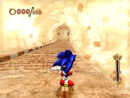
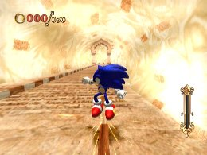
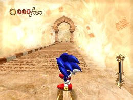
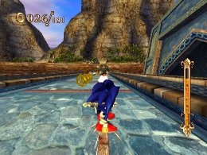
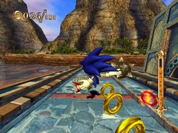
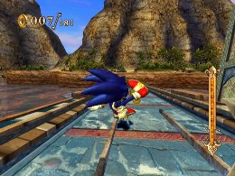
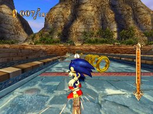
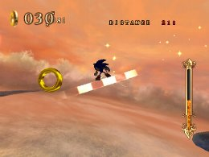

グラインド活用法
基礎編
四角いレールのような場所（グラインドレール）に飛び乗る事で、グラインドが行えます。
グラインド中はレールに沿って、自動で走行してくれますが、徐々にスピードが落ちていきます。
スピードが遅くなってきたら、2ボタンを押すことで再度スピードを上げることが出来ます。
長いグラインドをする際は、定期的に2ボタンを押すことで、減速を防げます。



グラインドの速度は一定時間最高速を維持したあとに減速が始まるので、加速のために連打する必要はありません
また、グラインド中にもチャージジャンプが行えます。
グラインド中に障害物を避けたい時や、グラインドから高い場所へジャンプしたい時など、グラインド中もジャンプを意識すると良いでしょう。
「トリック」
グラインド中にリモコンを左右に傾けることで、傾けた方向にトリックを行います。トリックはグラインドから降りるだけでなく、他にグラインドレールがある場合に飛び移る事が出来ます。
他のグラインドレールへトリックが成功すると経験値が獲得出来るので、積極的に狙っていくと良いでしょう。
ただし、クイックエア系のスキルを装備するとトリック中の空中制御も変化する為、操作には十分注意が必要です。




トリックの飛距離はリモコンを傾けている時間で変わる
「隠しグラインドレール」
マップには見えないグラインドもあり、思わぬショートカットになる事もあるので、探してみると面白いかもしれません。

見えないグラインドレールは、通常キラキラと輝いているのが目印
 RSS
RSS